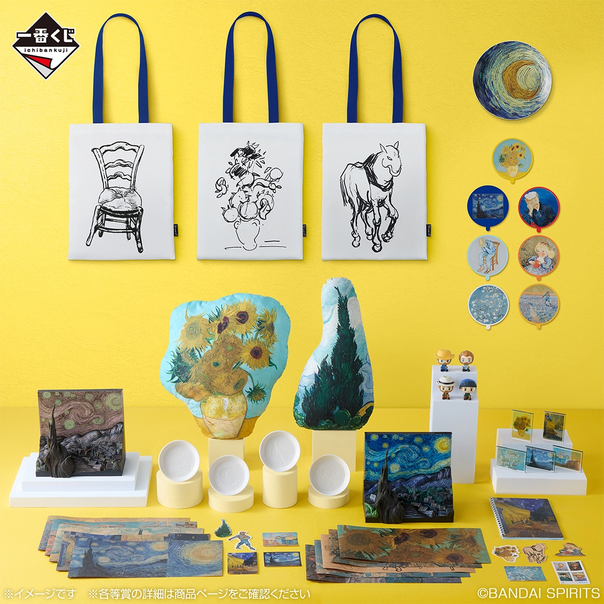
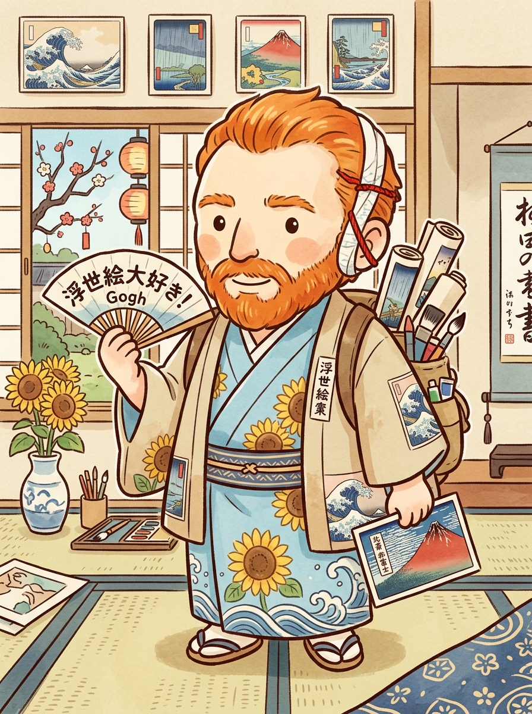
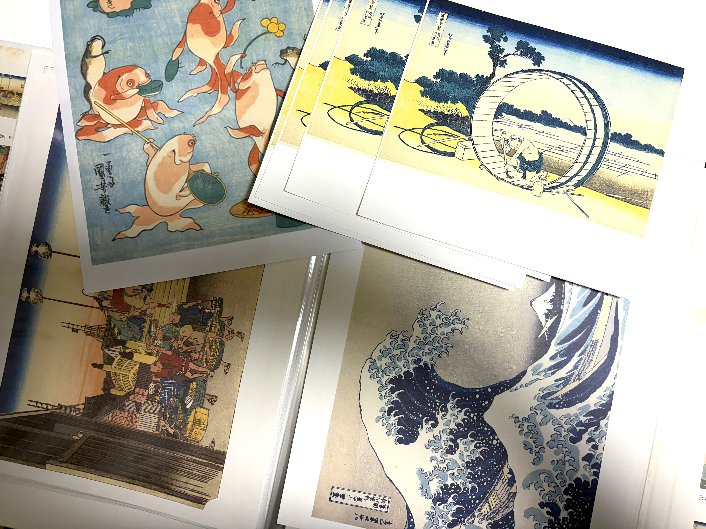

作者：うさまろ
プロフィール
浮世絵をモチーフに小物をつくっています。
手芸・工作・イラスト・料理など、手仕事が大好き。
特に好きな浮世絵師は、歌川国芳。
最近Webページ作成の勉強しました。
このプロジェクトのこと
浮世絵をもっと身近に
浮世絵は、歴史や美術の知識がないと少し難しく感じるかもしれません。そこで、100均で手に入る身近な材料を使いながら、気軽に浮世絵に触れられる方法を紹介します。

ゴッホの一番くじ（大人気ですぐに完売したそうです）
それと、浮世絵の素晴らしい文化を後の世代へ繋いでいきたい、という思いもございます。
浮世絵や江戸文化は、日本ならではの魅力が詰まっておりますが、現代ではその面白さがまだ十分に伝わっていないように思えてなりません。
その理由のひとつは、浮世絵を「特別な美術品」として少し難しく捉えすぎているからではないでしょうか。もともとの浮世絵は、現代でいう雑誌や漫画のように、装いや旅、流行などを気軽に楽しむ身近な娯楽だったのです。
だからこそ、現代のみなさまに浮世絵をもっと身近で親しみやすいものとして感じていただき、その楽しさに気づく方が増えることこそが、文化を未来へ届け続ける一歩になると考えております。観光などに活かすことはもちろん、文化として守り伝えるためにできることが、まだまだたくさんあるはずです。
このプロジェクトが、皆様に届き、小さなきっかけとなりましたらとても嬉しく思います。

ゴッホは大の浮世絵ファンだった
制作する過程も楽しむ
このプロジェクトでは、作品の完成だけを目的にせず、調べたり、材料を選んだり、試行錯誤したりする制作過程そのものも大切にしております。
SNSやWebを通して制作の裏側も紹介しながら、江戸の粋である「浮世絵」と現代の「ものづくり」を掛け合わせ、ぴょんと軽やかにステップアップしながら、これまでにない新しい楽しみ方を皆さまと一緒に広げてまいります。
